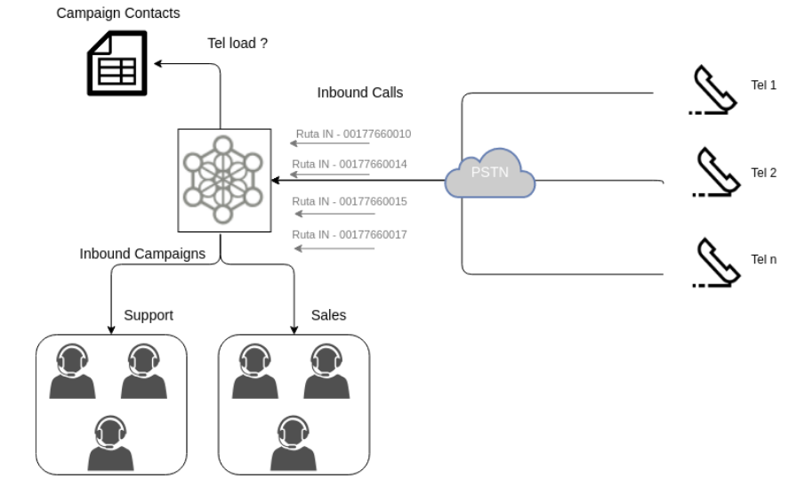

Enrutamiento de llamadas entrantes¶
Una vez disponible nuestra campaña entrante, se debe proceder con la vinculación de un número telefónico «DID» disponible en alguno de los troncales SIP por los que llegarían las solicitudes de llamadas con la campaña entrante en cuestión. Es decir la asignación del número y la campaña campaña entrante hacia a donde derivar a todas las llamadas que ingresen a OMniLeads sobre dicho número DID.
Figure 1: Inbound routes
Para generar una nueva ruta de llamadas entrantes, debemos acceder al punto de menú Telephony -> Inbound routes en donde se listan las rutas creadas y además se pueden añadir nuevas.
En la figura 2 se puede visualizar una ruta entrante en su pantalla de configuración.

Figure 2: Inbound route parameters
Vamos a definir cada campo:
- Name: es el asignado a la ruta (alfanumérico sin espacios)
- DID number: es el número entrante que se valida como disparador del encaminamiento de la llamada sobre el destino seleccionado por la propia ruta.
- Callerid prefix: el valor que se configure en en este campo, aparecerá ccomo prefijo del callerid que llega en cada llamada por el troncal correspondiente.
- Language: el idioma que se utiliza a la hora de repoducir locuciones por defecto del sistema sobre los canales que ingresan por la ruta.
- Destination type: el tipo de destino a donde se enviarán las llamadas ingresadas por dicha ruta. Dentro de los tipos de destinos existen (Campañas entrantes, IVR, condicionales de tiempo)
- Destination: destino al cual enviar los canales.
Es importante aclarar que se permiten que varias rutas pueden tener el mismo destino.